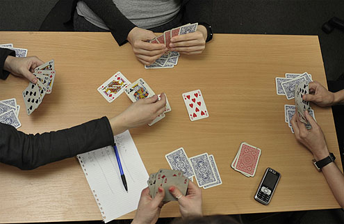

Tablić
Ovu igru mogu igrati dva ili više igrača. Koristi se uglavnom jedan špil (bez džokera). Igra se tako što igrač „precepi“ deo špila i sa dna izvlači četiri karte koje stavlja na sto okrenute prema gore. Drugi deo karata se koristi za deljenje gde svaki igrač dobija 6 karata.
Sa talona se karte mogu uzimati u paru sa kartom koju igrač ima (npr. 10 se uzima ako ima 10) ili kao zbir karata (npr. 2+8=10). Igra se sve dok se ne istroši ceo špil karata. Pobednik je onaj igrač koji sakupi najviše štihova. Karte koje se smatraju štihovima su 10, J, Q, K, A. Sve ove karte svih znakova se računaju kao jedan štih osim 10♦ koja se naziva „dupla desetka“ i računa se kao dva štiha. Pored njih, kao štih se računa i 2♣ koja se naziva „mala dvojka“.